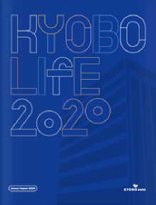

경영공시는 「보험업법」, 「보험업감독규정」 등에 따라 보험회사가 홈페이지에 공시해야 하는 경영사항을
생명보험협회에서 정한 생명보험 경영통일공시기준의 표준화 양식에 맞춰 작성한 것입니다.
경영공시는 결산 및 분기별 임시결산 사항을 공시하는 ‘정기경영공시’와 해당 사유 발생 시 즉시 공시하는 ‘수시경영공시’로 나뉩니다.
정기경영공시

수시경영공시
- 경영공시는 결산 및 분기별 임시결산 사항을 공시하는 ‘정기경영공시’와 해당 사유 발생 시 즉시 공시하는 ‘수시경영공시’로 나뉩니다.
- 본 홈페이지 경영공시실의 공시자료는 생명보험협회 경영공시실을 통해서도 동일한 내용을 확인하실 수 있습니다.